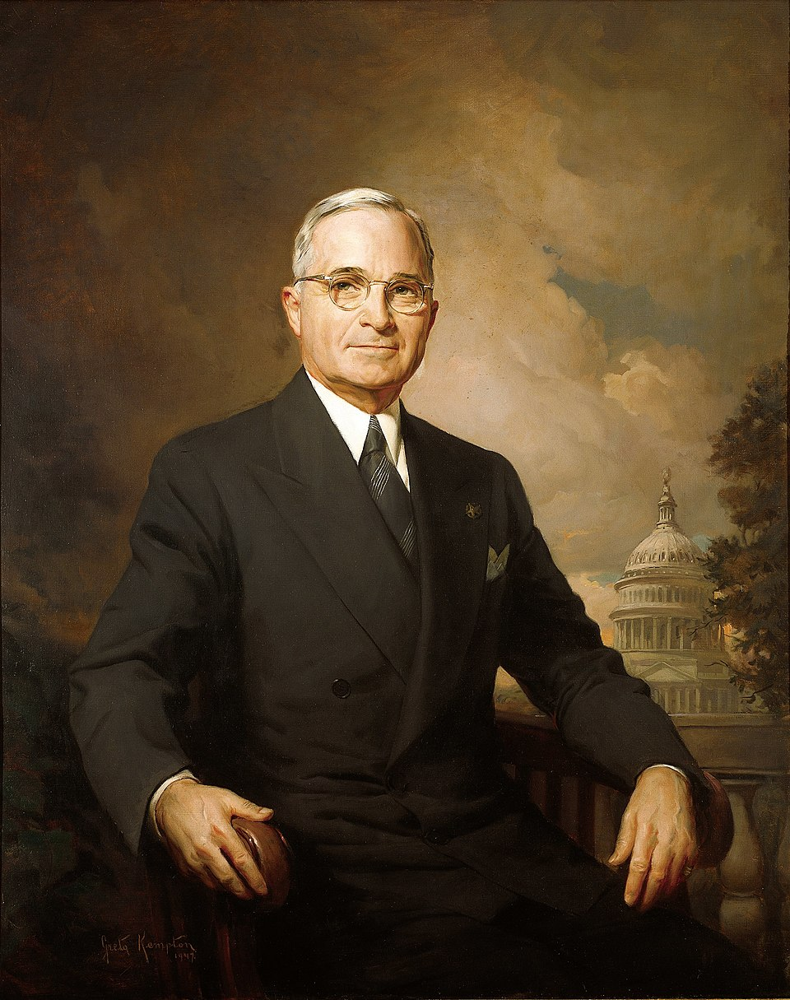
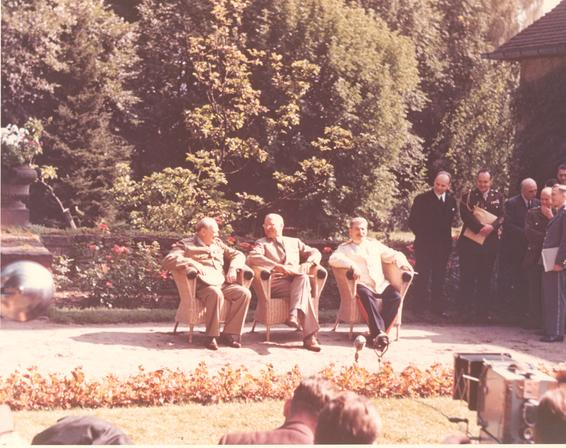

⏱️ 10초 카드 · 원폭과 냉전의 시작 (1884~1972)
원폭 투하 결정트루먼 독트린한국전쟁 파병맥아더 해임
여는 질문 — 전쟁을 빨리 끝내기 위해서라면, 큰 희생도 괜찮은 걸까?
이름
한국어해리 S. 트루먼
원어Harry S. Truman
실제 발음해리 트루먼
로마자Harry S. Truman
영어권Harry S. Truman
왜 이 사람인가
한 사람의 손에서 전쟁을 끝낸 결정과 수많은 민간인 희생을 부른 결정이 함께 나왔어요. '큰 결정에는 큰 책임이 따른다'는 걸 보여 주는 인물 — 그리고 한국전쟁에서 우리 역사와 직접 얽히는 사람이에요.
생애
2차 세계대전 막바지에 미국 대통령이 된 사람이에요. 일본에 원자폭탄을 떨어뜨리라는 결정을 내려 전쟁을 끝냈지만, 그 결정은 지금도 큰 논쟁거리예요.
한국전쟁이 터지자 UN군 파병을 결정해 대한민국을 도왔어요.
동시에 그는 '전쟁을 한반도 안으로만 제한한다'며 중국·소련으로 번지는 것을 막았어요. 확전을 주장한 맥아더 장군을 해임한 일이 유명하죠.
자료로 보기 — 유묵·사진


남긴 말
“모든 책임은 여기서 멈춘다. (The buck stops here.)”
그의 책상에 놓여 있던 팻말의 글귀예요. 결정을 미루지 않고 끝까지 책임지겠다는 태도를 보여 주죠. · 출처: 트루먼 대통령 책상의 팻말
“나는 그 결정을 내렸고, 다시 같은 상황이 와도 똑같이 내릴 것이다.”
원폭 투하 결정을 두고 평생 흔들리지 않았다는 그의 입장이에요 — 옳고 그름의 논쟁은 지금도 이어져요. · 출처: 원폭 결정에 대한 트루먼의 거듭된 입장 정리
연표
- 1884출생
- 1945대통령 취임·원폭 투하 결정
- 1950한국전쟁 UN군 파병
- 1951맥아더 해임
- 1972사망
미주리의 평범한 사람에서 세계의 결정자로
시골 출신의 평범한 정치인이, 20세기에서 가장 무거운 결정들을 내리는 자리에 오른 길이에요.
현재 지도 위 표시예요. 미주리의 한 사람이 내린 결정들이, 일본과 한반도의 운명에 닿았어요.
빛과 그림자전쟁을 끝낸 결정과 수많은 민간인 희생을 부른 결정이 같은 손에서 나왔어요. '큰 결정에는 큰 책임이 따른다'는 걸 보여줘요.
더 깊이 (고등·일반)
갑작스러운 대통령
부통령이 된 지 몇 달 만에 루스벨트 대통령이 갑자기 죽으면서, 그는 전쟁이 끝나가던 1945년 대통령이 됐어요. 원자폭탄이라는 비밀도 그제야 알게 됐죠.
원폭 투하 결정(1945)
그는 일본에 원자폭탄을 떨어뜨리라고 결정했어요. '전쟁을 빨리 끝내 더 많은 희생을 막기 위해서'였다지만, 수십만 민간인이 죽은 이 결정은 지금도 가장 뜨거운 역사 논쟁이에요.
냉전의 시작
전쟁이 끝나자 미국과 소련이 맞서는 '냉전'이 시작됐어요. 그는 공산주의의 확산을 막겠다는 '트루먼 독트린'을 내놓으며 냉전의 한 축을 세웠죠.
한국전쟁 파병(1950)
북한의 남침으로 한국전쟁이 터지자, 그는 빠르게 UN군 파병을 결정해 대한민국을 도왔어요. 이 결정이 오늘의 한국과 직접 이어져요.
맥아더 해임(1951)
중국 본토까지 치자는 맥아더 장군과 달리, 그는 전쟁을 한반도 안으로 묶어 두려 했어요. 결국 확전을 고집하는 맥아더를 해임했죠 — '전쟁은 군인이 아니라 국민이 뽑은 대통령이 결정한다'는 원칙을 세운 사건이에요.
사람의 그물 — 함께 읽을 인물
이 인물이 나오는 이야기
더 공부하기 — 여기서 출발하세요
📚 책으로
- 트루먼 (전기) ↗ · 데이비드 매컬러평범한 사람이 거대한 결정을 짊어진 생애.
- 원폭 투하, 그 결정의 진실 ↗가장 뜨거운 역사 논쟁을 양쪽에서 보기.
📜 1차 사료
- 트루먼 도서관 (대통령 기록) ↗그의 결정과 연설을 보관한 공식 기관.
🎬 영상으로
- 다큐 — 트루먼: 폭탄을 떨어뜨린 대통령 ↗ · The People Profiles원폭과 냉전, 그의 결정을 다룬 영어 다큐멘터리.
📍 가 볼 곳
- 인디펜던스 (미주리)그의 고향이자 대통령 도서관이 있는 곳.
- 백악관 (워싱턴 DC)원폭과 한국전쟁을 결정한 자리.